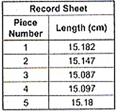

ENGAGE
Dindo was asked to cut five pieces of wire each one as close as possible to 15.125 cm in length. The record shows the length of the pieces Dindo cut. Is the first piece longer or shorter than the last price?
EXPLORE
To answer the problem above, compare the length of the first piece with that of the piece.
| First Piece | 15.18.2 | 2>0 | 15.182>15.180 |
| Last Piece | 15.18.0 | 0<2 | 15.180<15.182 |
AnswerThe first piece is longer that the last piece.
EXPLAIN
In comparing decimals, we line up first the decimal points and the digits in their corresponding place values. Begin comparing the digits with the same place values from the leftmost digits. Use the symbols '>' or '<' in comparing the digits in the same place value. Take note of the first pair of digits you see that differ; the decimal with the bgger digit in this pair is the bigger decimal.
Applications and Problem Solving
The length of a sample different insects in centimeters are 1.47,0.7,1.047 and 1.6 . Arrange the lengths from the greatest to least.